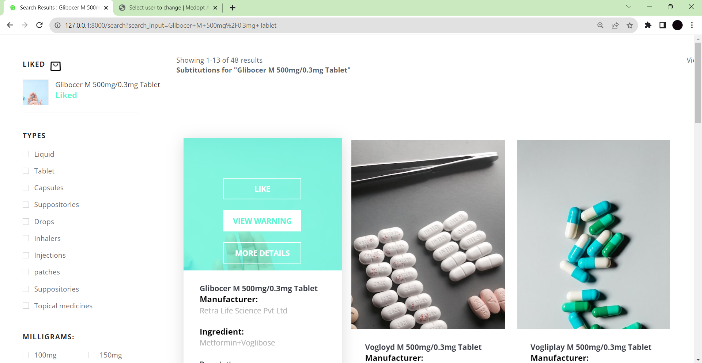
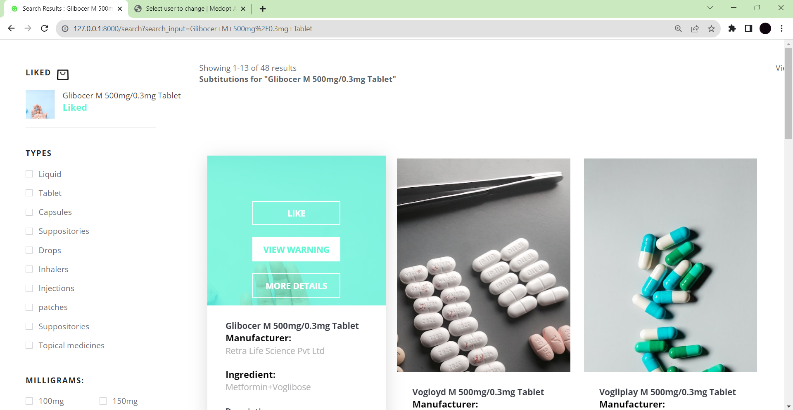

Implementation
Due to the variety of possibilities and individual differences in drug responses, customers often struggle to identify alternatives to prescription medications. Current systems struggle to offer alternatives when first medicines are ineffective or inappropriate and lack individualized recommendations. Utilizing patient-specific data and cutting-edge algorithms, an advanced medicine alternative recommendation system is required to provide precise and individualized alternative drug options, improve treatment outcomes, and increase patient safety.
- Data Collection and Storage
- Gather relevant data
- Create a database
- Recommendation Engine
- Data preprocessing
- Recommendation algorithms
- User interface
- User Data Storage and retrieval
- Recommendation generation: Implement the logic in the application layer that interacts with
the
- recommendation engine to generate alternative medicine recommendations based on user inputs and
- Web Scraping
- Data Representation
- Text Vectorization
- Cosine Similarity
- SignUp Page
- Login Page
- Home Page
Websites that provide users with information and recommendations on medical conditions, treatments, and healthcare providers have become incredibly popular. India's 1mg is an online healthcare portal that offers a variety of services about medications, healthcare items, and diagnostic procedures.
- Search Results
Websites that provide users with information and recommendations on medical conditions, treatments, and healthcare providers have become incredibly popular. India's 1mg is an online healthcare portal that offers a variety of services about medications, healthcare items, and diagnostic procedures.
- Existing System
Websites that provide users with information and recommendations on medical conditions, treatments, and healthcare providers have become incredibly popular. India's 1mg is an online healthcare portal that offers a variety of services about medications, healthcare items, and diagnostic procedures.
User need to SignUp before saving any medicine. Our SignUp page is connected to our Bsckend, all the User information is stored in the database as we are Using as our Django Framework Django bydefault uses SQLite as default database.
If User already created an account he can now Login with proper cretedentials. Duplicates users are avoided by the backend. User Login and SignUp information in saved in the form of table and can only be accessable by the admin only. These Login and SignUp function are provided by Django, that means these functions are inbuild in Django Framework programmer no need to declare the functionality for these functions.
 
